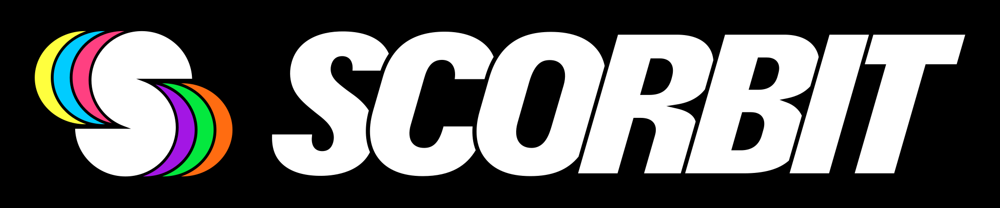

<!doctype html>
<!--
  Scorbit feed overlay: a starter for an OBS browser source.

  Run the agent (`scorbit-feed --machines ... --static templates/overlay`) and
  point OBS at http://127.0.0.1:8787/.

  Opened any other way, the page reads the agent at http://127.0.0.1:8787, or
  wherever ?agent=<http(s) url> says:
  - from disk (file://): the agent must be started with --allow-file-origin,
    because a file:// page sends `Origin: null`, which it refuses by default;
  - from your own web server: add that server's origin to the agent with
    --cors-origin <origin>.

  Everything here is yours to restyle except the attribution slot below.
-->
<html lang="en">
  <head>
    <meta charset="utf-8" />
    <meta name="viewport" content="width=device-width, initial-scale=1" />
    <title>Scorbit feed overlay</title>
    <link rel="stylesheet" href="overlay.css" />
  </head>
  <body>
    <div id="status" class="status" data-status="connecting" title="connecting"></div>
    <main id="machines" class="machines"></main>

    <!--
      ATTRIBUTION SLOT -- required. Scorbit's developer terms
      (https://scorbit.io/developer-terms-of-use/) require visible attribution
      wherever feed data is displayed. Keep this element visible, and keep the
      logo at least 30px tall, uncropped, on its built-in black strap, which is
      what keeps it legible over video. The logo is a Scorbit trademark and is
      not covered by this package's MIT license.
    -->
    <footer class="attribution" data-scorbit-attribution>
      
    </footer>

    <script src="overlay.js"></script>
  </body>
</html>
